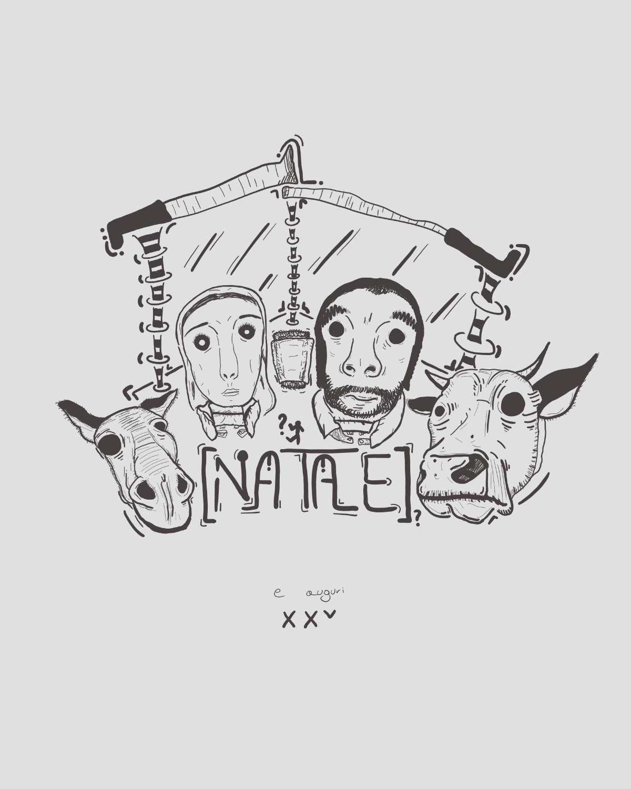
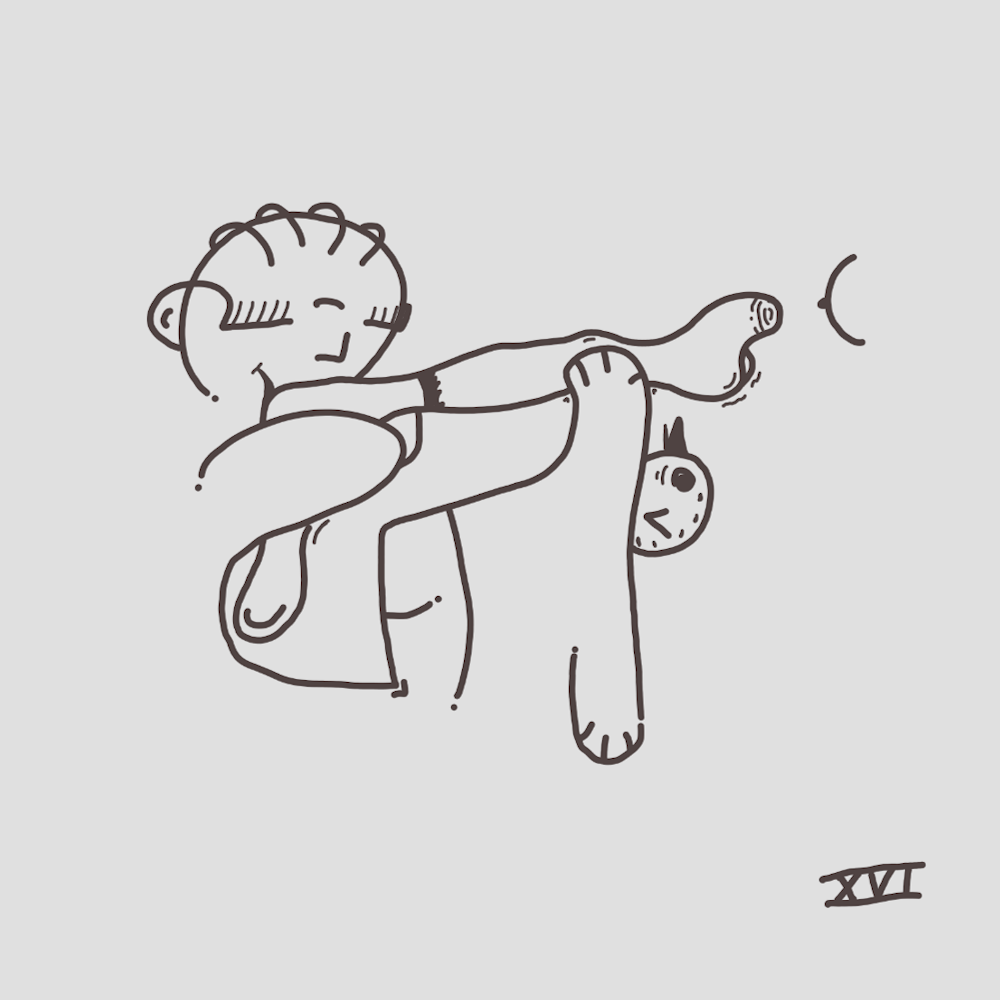
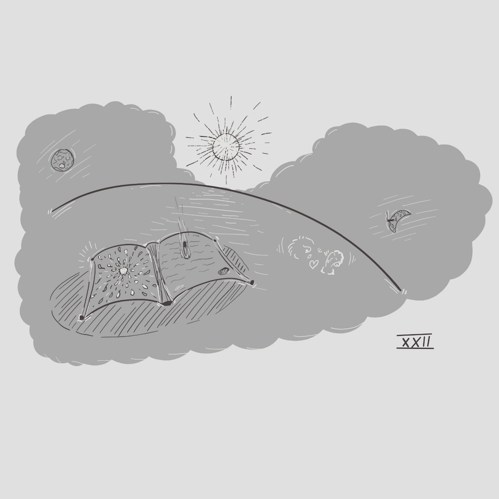
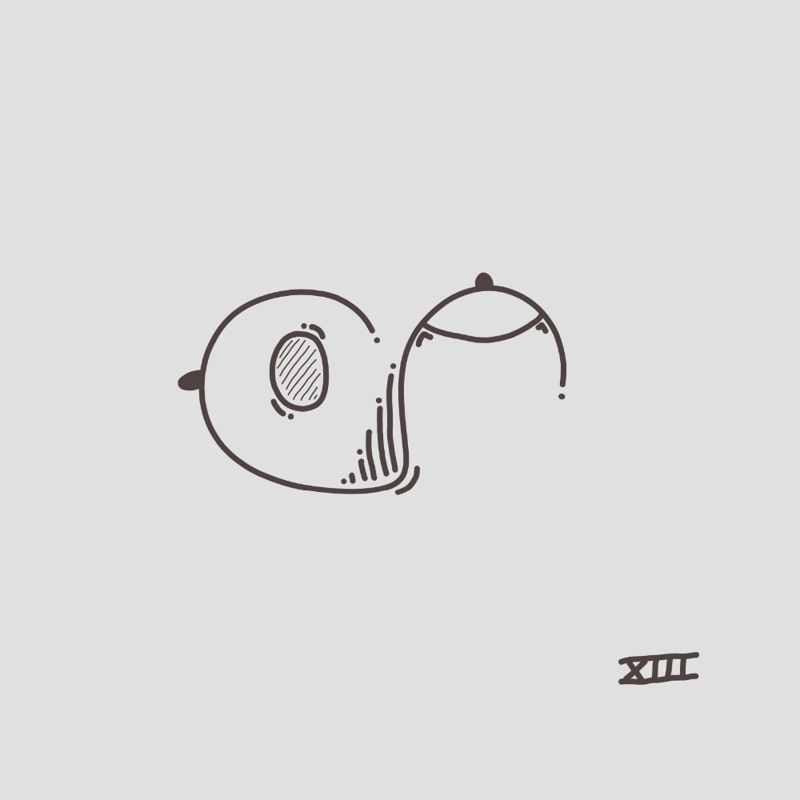
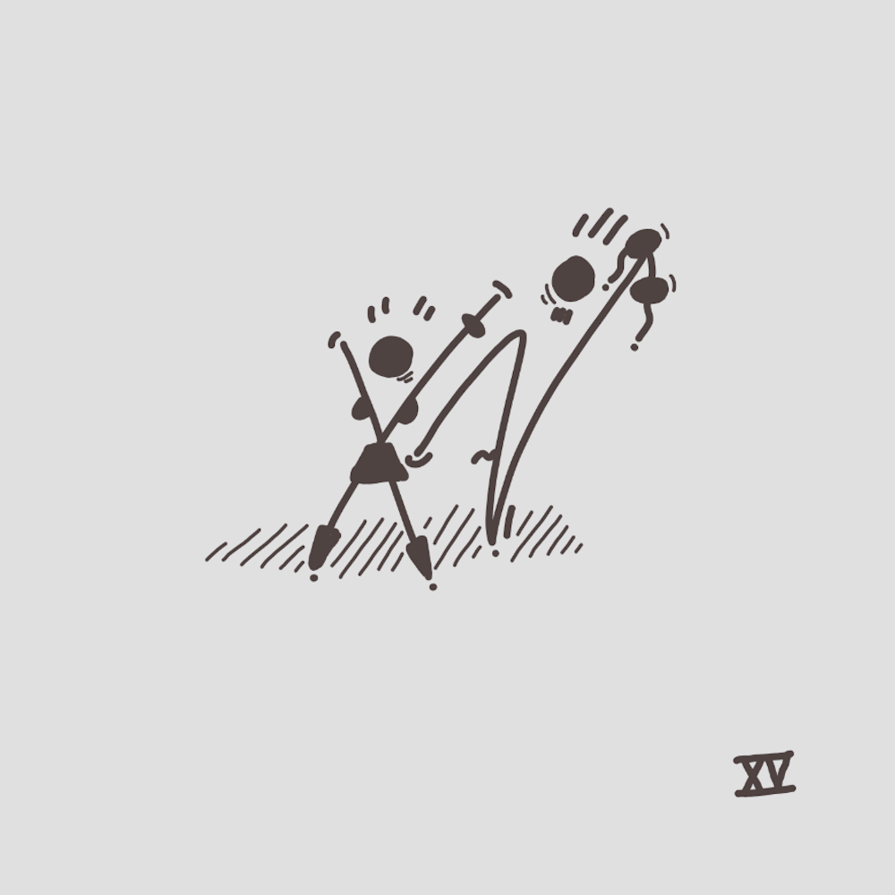
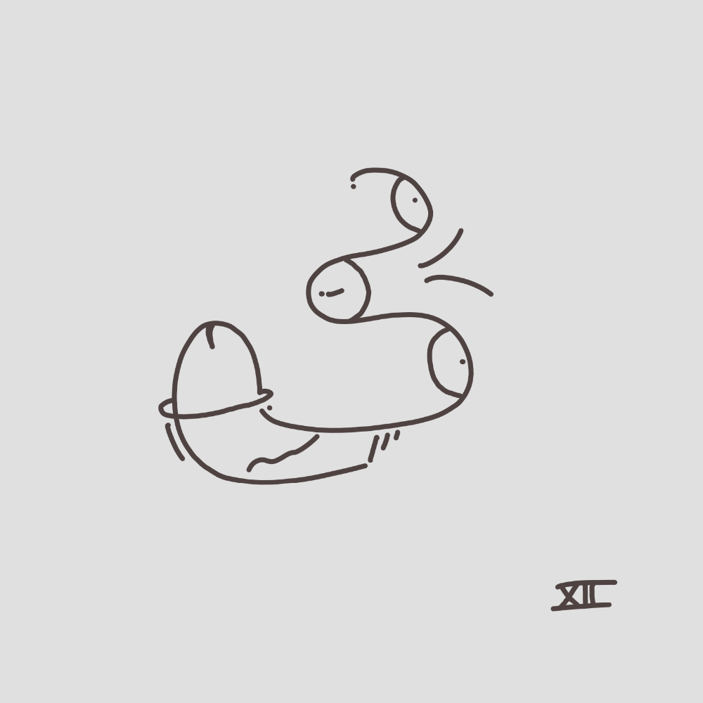
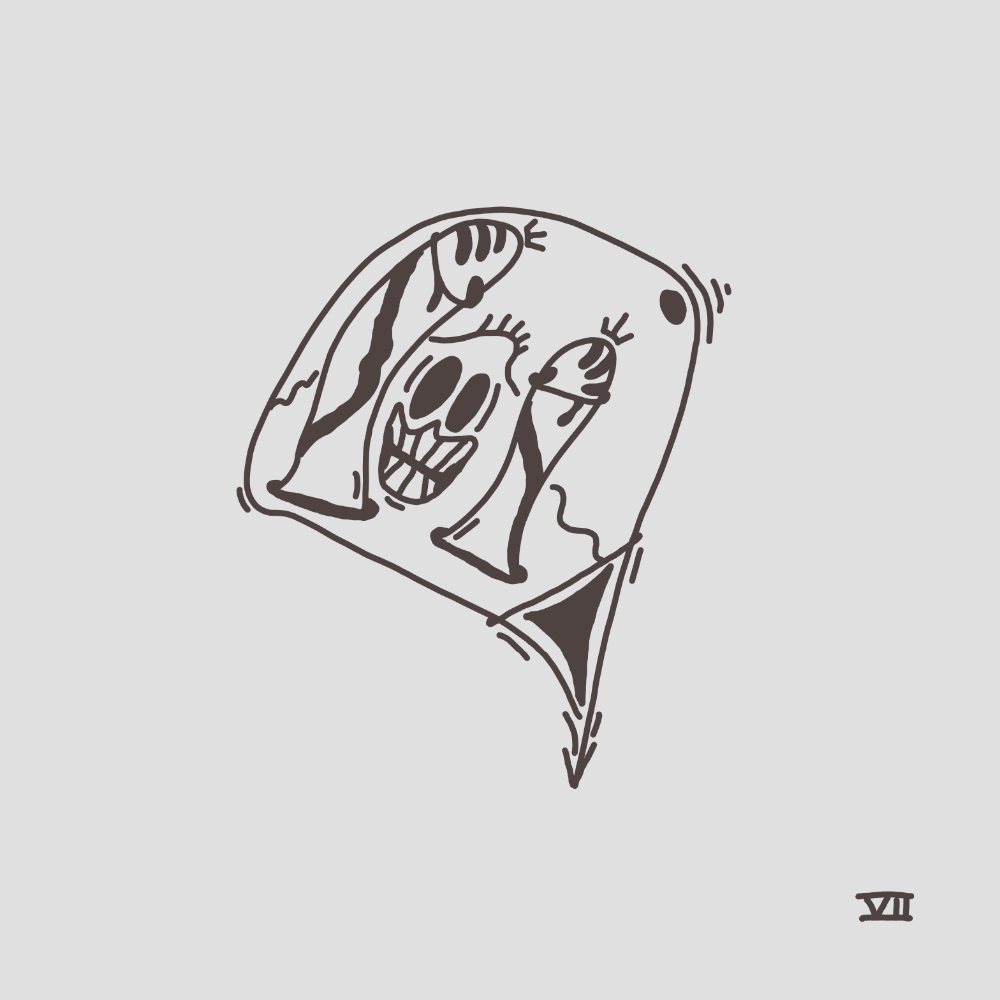
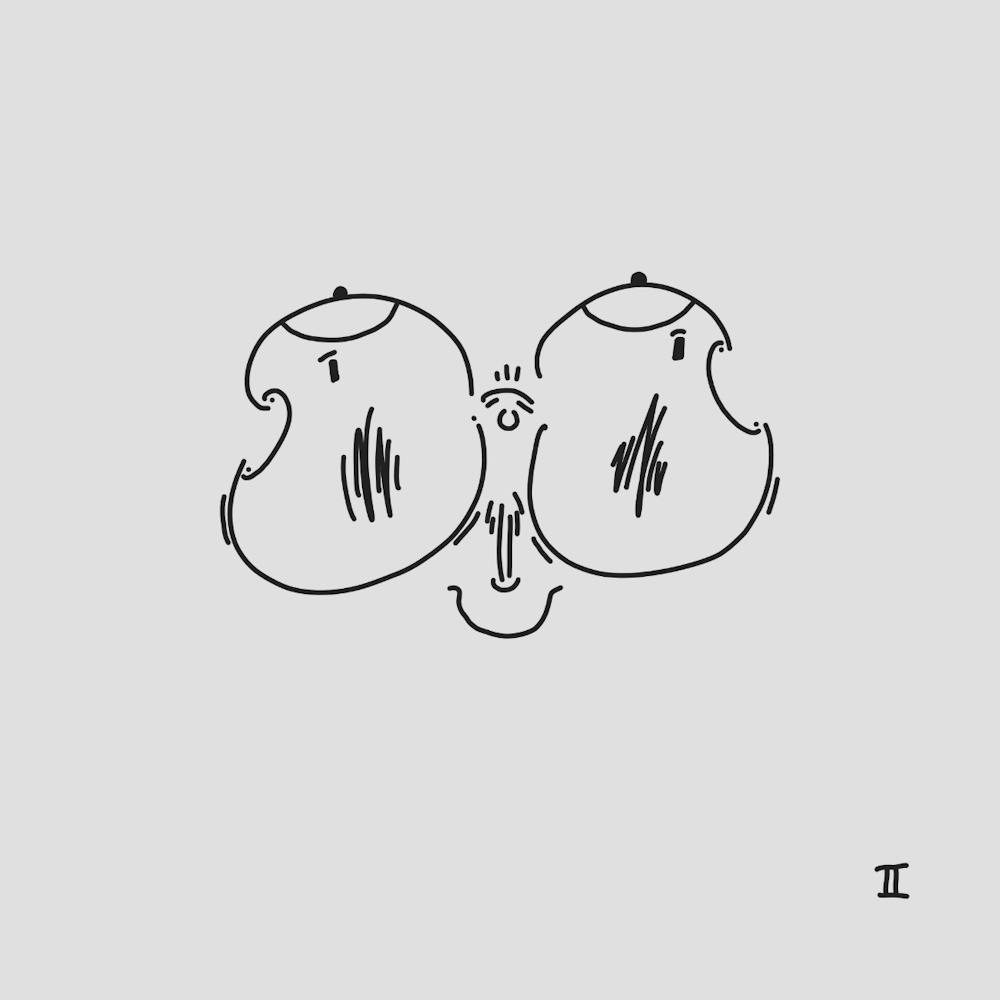
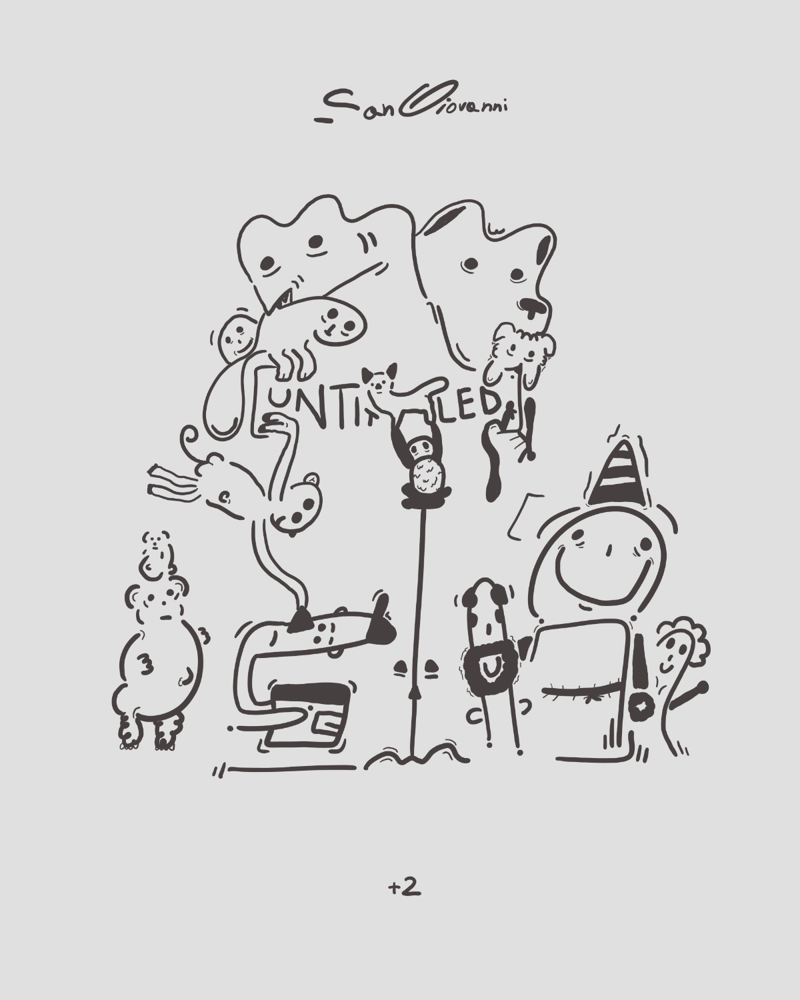

Avvento
Non credevo di arrivarci, eppure eccoci, con il 25-26.
tanta roba, secondo me.
Mi sono divertito, mi è piaciuto molto di più dello scorso. buon natale.
Non credevo di arrivarci, eppure eccoci, con il 25-26.
tanta roba, secondo me.
Mi sono divertito, mi è piaciuto molto di più dello scorso. buon natale.











